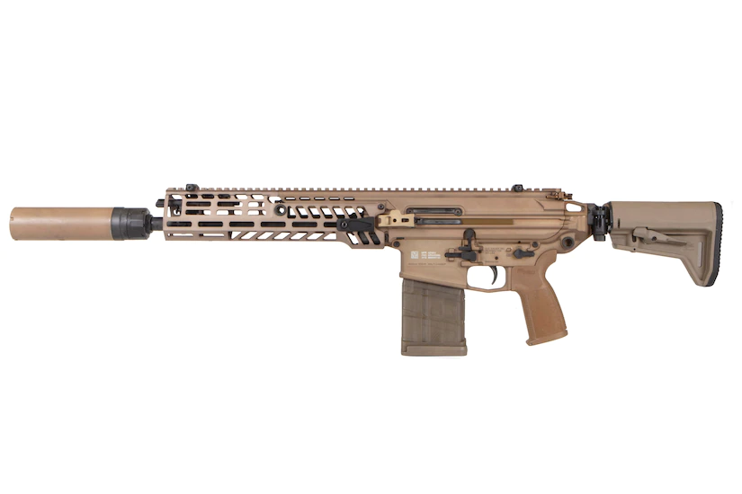
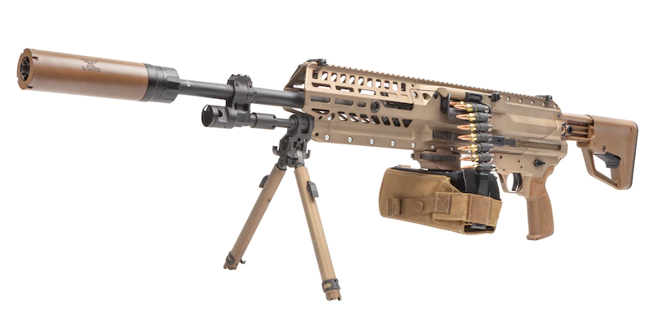
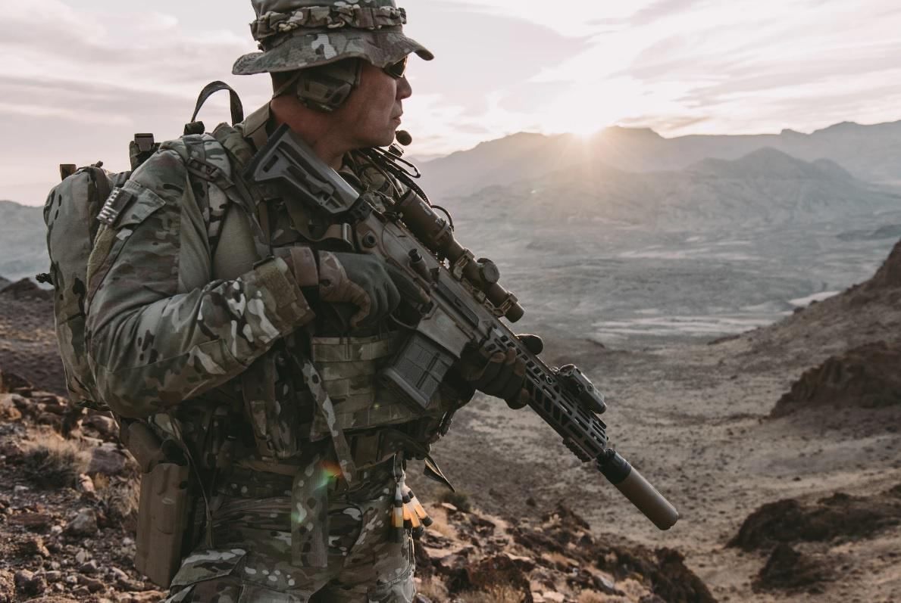
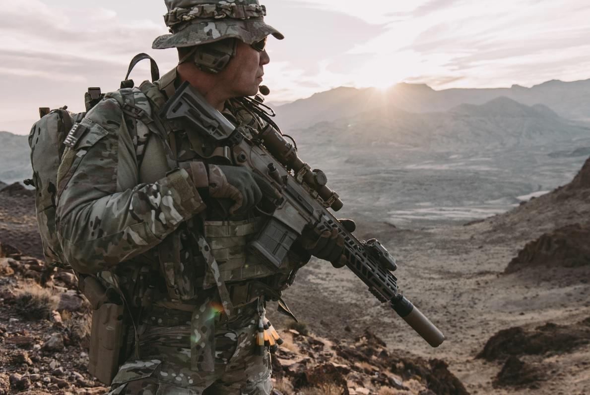

Our nation's military has made some noticable changes and upgrades to their aresenal to prepare for conflict with a near-peer adversary. One of these notable changes was the U.S. Army finalizing contracts for two new rifles to replace the iconic M4 Assault Rifle and M240 Light Machine Gun. The XM7 and XM250 carry less ammo than the current platoon weapons utilized by the Army and other branches, but will be harder hitting.
 The XM7 Assault Rifle  The XM250 Light Machine GunBoth weapons' predecessors were designed to carry as much ammo as possible while still being light and portable. The trade off comes with the advent of new body armor piercing capabilites, which hint as the Army's preparation for conflict with an adversary that can equip its soldiers with body armor.
 A section of ammo from the M250's belt

A US Army soldier with the M7 rifle
A section of ammo from the M250's belt

A US Army soldier with the M7 rifle
 A US Army soldier with the M250 light machine gun
A US Army soldier with the M250 light machine gun
Garand Thumb, a military arms enthusiast and Youtuber, had the opportunity to review both weapons in videos posted in the last year.
Garand Thumb reviews the M7 and M250
Following are Garand Thumb's reviews of both weapons, the M7 previously being known as the M5 in its earlier stages of development for the Army.
Garand Thumb on the XM7 Garand Thumb on the XM250Images found in Google search Videos from Garand Thumb on Youtube